ESSENTIAL QUESTIONHow did fear of communismSystem where the state controls the economy. reshape American foreign policy and daily American life?
In 1955, a student in an American classroom heard a siren and slid under her desk. She covered her head, closed her eyes, and waited for the teacher to say it was safe. The drill was supposed to prepare her for a Soviet nuclear bombA nuclear weapon built by the Soviet UnionCommunist nation led by Russia during the Cold War... The United States and the Soviet Union were not shooting at each other, but fear was already shaping the school day.
In 1955, a student heard a siren at school. She slid under her desk. She covered her head and closed her eyes. The drill was supposed to prepare her for a Soviet nuclear bomb. The U.S. and Soviet Union were not shooting at each other, but fear was already shaping daily life.
The Cold War was not one single battle. It was a global struggle over power, ideas, weapons, spies, alliances, and fear. American leaders said they were defending freedom from communism. But that fear also pushed the United States into wars overseas and suspicion at home.
The Cold War was not one battle. It was a global struggle over power, ideas, weapons, spies, alliances, and fear. American leaders said they were defending freedom from communism. That fear also led to wars overseas and suspicion at home.
CHAPTER ONE
TWO POWERS, ONE DIVIDED WORLD
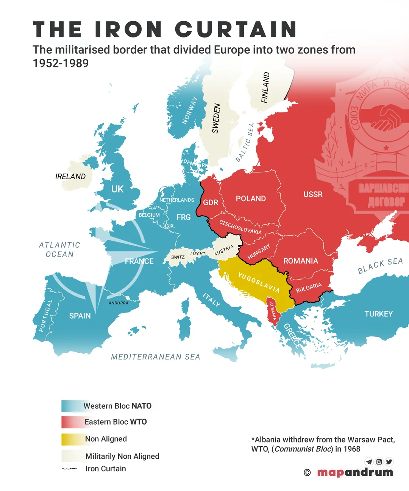
Europe divided by the Iron Curtain. Western nations aligned with the United States; Eastern nations fell under Soviet control. Wikimedia Commons.
When World War IIGlobal war fought from 1939 to 1945. ended in 1945, the United States and the Soviet Union were the strongest powers left standing. They had fought together against Nazi Germany, but they did not trust each other. The United States supported democracy and capitalismSystem where private businesses drive the economy.. The Soviet Union was a communist dictatorshipOne-party rule using communist control. controlled by one party.
When World War II ended, the United States and Soviet Union were the strongest powers. They had fought together against Nazi Germany. They still did not trust each other. The U.S. supported democracy and capitalism. The Soviet Union was a communist dictatorship.
The Soviet Union had lost more than 20 million people in World War II. Stalin wanted a buffer zoneLand separating one power from a threat. of friendly governments between the Soviet Union and Western EuropeEuropean countries allied with the United States.. Soviet troops stayed in Eastern EuropeEuropean countries under Soviet influence after WWII. and helped install communist governments in Poland, Czechoslovakia, Hungary, Romania, Bulgaria, and East Germany.
The Soviet Union lost more than 20 million people in World War II. Stalin wanted friendly governments between his country and Western Europe. Soviet troops stayed in Eastern Europe. They helped create communist governments there.
Winston Churchill called this division the Iron CurtainThe Cold War line dividing communist Eastern Europe from Western Europe.. The phrase made the split sound heavy, hard, and almost impossible to cross. Europe now looked like two worlds: one tied to Washington, D.C., and the other tied to Moscow.
Winston Churchill called this division the Iron Curtain. The phrase made the split sound heavy and hard to cross. Europe now looked like two worlds. One side was tied to the United States. The other was tied to Moscow.
The United NationsOrganization created to help prevent wars. was created in 1945 to prevent another world war. But the UN had limits. The United States and Soviet Union both sat on the Security CouncilUN group with major power over global security.. Each could block action with a vetoPower to block an official action.. The world had a referee, but the two biggest players could stop the call.
The United Nations was created in 1945 to prevent another world war. But it had limits. The U.S. and Soviet Union both had veto power. Each could block action. The world had a referee, but the biggest players could stop the call.
Real-world connection: Cold War alliances still shape which countries trust each other, fear each other, and ask each other for military help.
Real-world connection: Cold War alliances still shape which countries trust, fear, and defend each other.
DID YOU KNOW
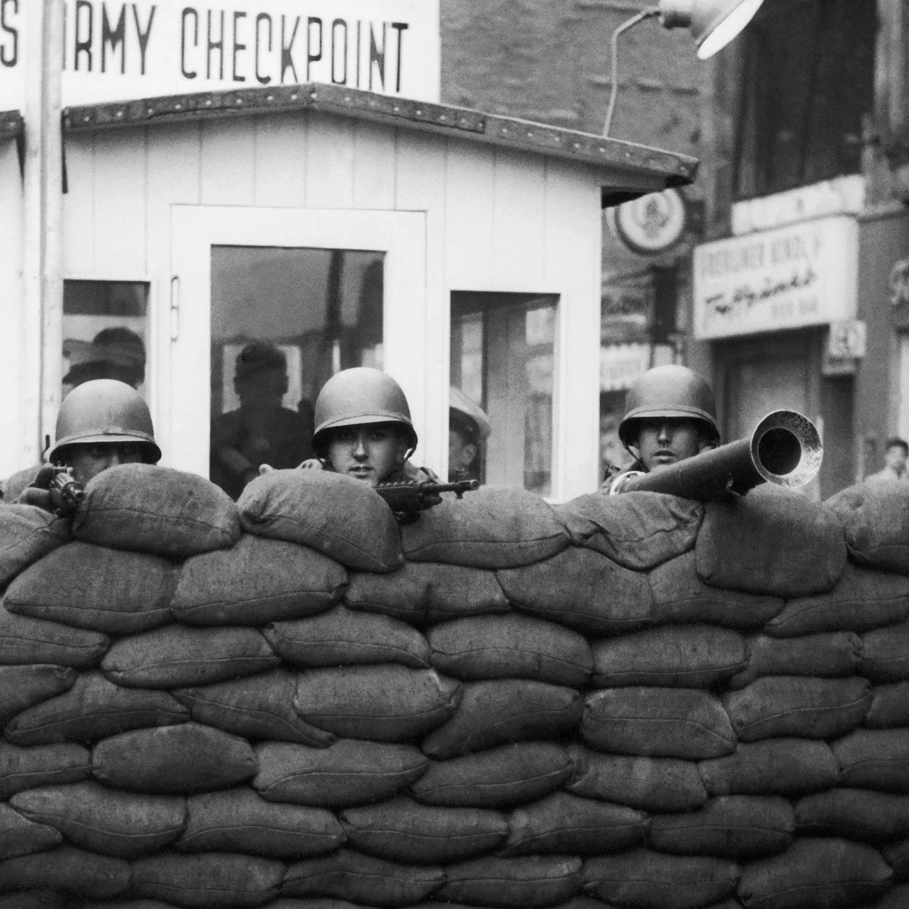
Checkpoint Charlie warned people they were leaving the American sector.
At Checkpoint Charlie in Berlin, a person could walk past one sign and move from the American sector toward the Soviet side of the Cold War. The border was not just a map line. It was a place where a soldier, a language, a uniform, and one warning sign could tell you that the world had changed under your feet.
FAST FACTS
THE COLD WAR IN NUMBERS
20M+People the Soviet Union lost in World War II, helping explain why Stalin wanted control in Eastern Europe.
200KApproximate flights that supplied West Berlin during the Berlin Airlift after the Soviet blockade.
36KAmerican service members killed in the Korean War as containment became a shooting war.
36Days the Army-McCarthy hearings were televised, letting Americans watch fear and accusation unfold.
15K+Approximate number of U.S. nuclear warheads at the Cold War peak in the 1960s.
CHAPTER TWO
CONTAINMENT: HOLDING THE LINE
American leaders needed a plan for dealing with Soviet power. A diplomat named George KennanDiplomat who helped shape containment policy. argued that the Soviet Union would expand slowly by supporting communist movements in weak countries. He said the United States should use containmentThe policy of stopping communism from spreading to new countries.: do not let communism spread farther.
American leaders needed a plan for Soviet power. George Kennan said the Soviet Union would spread communism slowly. It would support weak countries and movements. He said the U.S. should use containment. That meant stopping communism from spreading.
President Harry Truman turned containment into policy in 1947. He asked Congress for aid to Greece and TurkeyCountries Truman aided to resist communism., where communist movements were growing. Truman then made a much bigger promise: the United States would support free peoples resisting outside pressure or armed takeover. This became the Truman Doctrine.
President Truman turned containment into policy in 1947. He asked Congress to help Greece and Turkey. Communist movements were growing there. Truman made a bigger promise. The United States would support free peoples resisting takeover. This became the Truman Doctrine.
Containment soon moved from speeches to action. During the Berlin BlockadeThe Soviet attempt to block land access to West BerlinDemocratic part of Berlin surrounded by East Germany.., the Soviet Union cut off roads and railways into West Berlin. The United States and its allies answered with the Berlin AirliftAllied flights that supplied blocked West Berlin.. For almost a year, planes carried food, coal, and supplies into the city.
Containment soon became action. During the Berlin Blockade, the Soviet Union blocked roads and railways into West Berlin. The United States and its allies used planes instead. The Berlin Airlift carried food, coal, and supplies into the city.
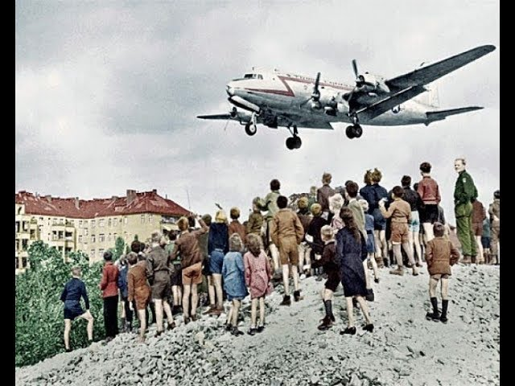
A U.S. Air Force C-54 lands at Tempelhof Airport during the Berlin Airlift, 1948. U.S. Air Force / Wikimedia Commons.
The biggest military test came in Korea. In 1950, communist North KoreaCommunist northern half of Korea. invaded South KoreaU.S.-backed southern half of Korea.. Truman sent troops under the United Nations flag. The war lasted three years and killed more than 36,000 Americans and more than a million Korean civilians. It ended almost where it began, at the 38th parallelLine dividing North Korea and South Korea..
The biggest test came in Korea. In 1950, communist North Korea invaded South Korea. Truman sent U.S. troops under the United Nations flag. The war lasted three years. More than 36,000 Americans died. More than a million Korean civilians died. It ended near the same border where it began.
1947Truman Doctrine announces U.S. support for countries resisting communist pressure.
1948-49Berlin Airlift supplies West Berlin after the Soviet blockade.
1949NATO forms. The Soviet Union tests its first atomic bombA powerful weapon using nuclear energy.. China becomes communistChina came under communist rule in 1949..
1950-53Korean WarWar over Korea from 1950 to 1953. turns containment into a shooting war in Asia.
Real-world connection: Containment changed American foreign policy from avoiding permanent alliances to building a worldwide military and political network.
Real-world connection: Containment changed U.S. foreign policy. America built a worldwide military and political network.
CHAPTER THREE
FEAR AT HOME: MCCARTHYISM AND THE RED SCARE
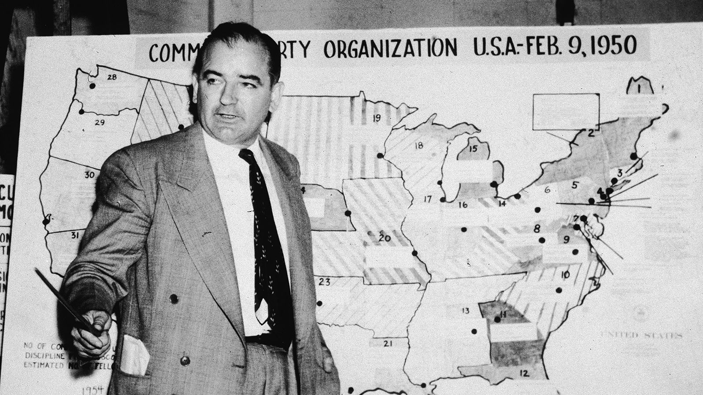
Senator Joseph McCarthy during Senate hearings, 1954. Library of Congress / Wikimedia Commons.
Cold War fear did not stay overseas. Americans learned that the Soviet Union had the atomic bomb. China became communist. Soviet spiesPeople secretly gathering information for the Soviet Union. had stolen nuclear secrets. Many people began to ask a frightening question: who inside the United States might be secretly helping the enemy?
Cold War fear came home. Americans learned that the Soviet Union had the atomic bomb. China became communist. Soviet spies had stolen secrets. Many people wondered who inside the U.S. might be helping the enemy.
Senator Joseph McCarthy used that fear. In 1950, he claimed he had a list of communists working in the State DepartmentU.S. office that manages foreign affairs.. He did not have strong evidence. But his accusations were loud, and fear made people listen. McCarthyismMaking accusations without strong evidence, especially about communism. became a national panic.
Senator Joseph McCarthy used that fear. In 1950, he said he had a list of communists in the government. He did not have strong evidence. But his accusations were loud. Fear made people listen. This was McCarthyism.
Congress also investigated suspected communists through HUACA House committee that investigated suspected communist influence., the House Un-American Activities CommitteeCongressional group investigating suspected communist influence.. HUAC targeted government workers, union members, teachers, actors, writers, and directors. The Hollywood TenWriters and directors punished after refusing HUAC. refused to answer HUAC's questions and went to prison. Many others were blacklistedBlocked from work because of accusations. and could not find work.
Congress also investigated suspected communists through HUAC. HUAC targeted workers, teachers, actors, writers, and directors. The Hollywood Ten refused to answer questions and went to prison. Many others were blacklisted and could not find work.
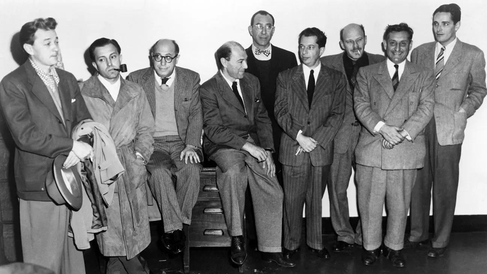
HUAC hearings and the Hollywood blacklist turned Cold War suspicion into ruined careers. Wikimedia Commons / Library of Congress.
McCarthy's power broke on television. In 1954, he accused the U.S. Army of hiding communists. Millions watched the hearings live. When McCarthy attacked a young lawyer with little connection to the case, Army lawyer Joseph Welch asked, "Have you no sense of decency?" The room applauded. McCarthy's influence collapsed soon after.
McCarthy's power broke on television. In 1954, he accused the U.S. Army of hiding communists. Millions watched the hearings. McCarthy attacked a young lawyer. Army lawyer Joseph Welch asked, "Have you no sense of decency?" The room applauded. McCarthy's influence collapsed.
Real-world connection: The Red Scare shows what can happen when accusation starts to feel like proof and fear becomes stronger than evidence.
Real-world connection: The Red Scare shows what can happen when accusation feels like proof.
ART SPOTLIGHT
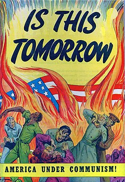
IS THIS TOMORROW: AMERICA UNDER COMMUNISM, 1947. WIKIMEDIA COMMONS.
This cover did not whisper its message. It showed fire, violence, a burning flag, and terrified civilians because anti-communist art was designed to hit the nervous system before the brain had time to argue. The point was not just to explain communism; it was to make readers feel that communism could arrive suddenly and destroy home itself.
CHAPTER FOUR
THE NUCLEAR AGE: LIVING UNDER THE BOMB
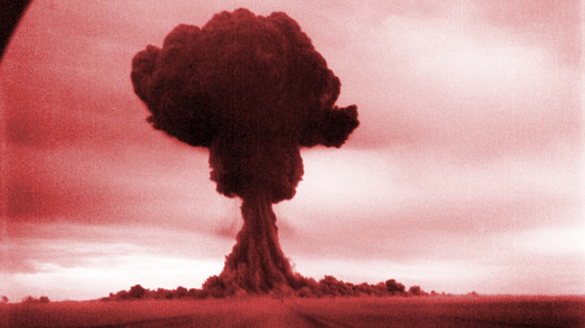
Soviet atomic bomb test, ca. 1949-1953. Wikimedia Commons.
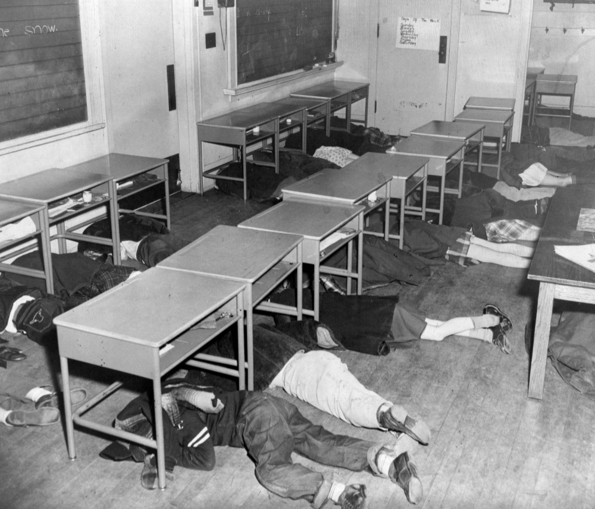
Students practice a duck-and-cover drill in an American school, ca. 1950s. Library of Congress / Wikimedia Commons.
In 1949, the Soviet Union tested its first atomic bomb. The United States no longer had a nuclear monopolySole control of nuclear weapons.. Both countries began building more powerful weapons. By the 1950s, they had hydrogen bombsNuclear weapons more powerful than atomic bombs. that could destroy entire cities.
In 1949, the Soviet Union tested its first atomic bomb. The United States no longer had the only nuclear weapons. Both countries built more powerful weapons. By the 1950s, they had hydrogen bombs that could destroy cities.
American leaders relied on deterrencePreventing attack by threatening a terrible response.. The idea was terrifying but simple: if one side attacked, the other side would strike back so hard that both would be destroyed. This was called Mutually Assured DestructionBoth sides could destroy each other if attacked., or MAD. Peace depended on fear.
American leaders relied on deterrence. The idea was simple and scary. If one side attacked, the other side would strike back. Both sides could be destroyed. This was called Mutually Assured Destruction, or MAD. Peace depended on fear.
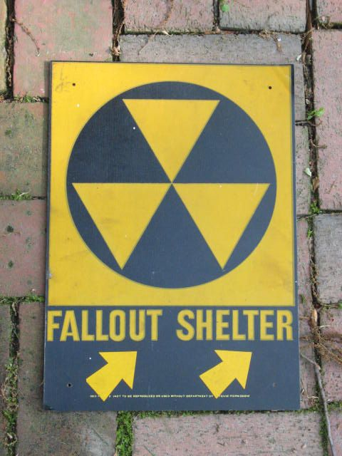
Fallout shelter signs appeared on public buildings across the United States during the nuclear arms raceCompetition to build more powerful weapons.. Wikimedia Commons.
The bomb changed daily life. Schools ran duck-and-cover drills. Cities marked fallout sheltersPlaces meant to protect people after nuclear attack.. Families were told to store food, water, and radios. These steps made people feel prepared, even though a real nuclear war would have been far more destructive than any school drill could solve.
The bomb changed daily life. Schools ran duck-and-cover drills. Cities marked fallout shelters. Families stored food, water, and radios. These steps made people feel prepared. A real nuclear war would have been far worse than any drill.
The arms race also helped create the space raceU.S.-Soviet competition in space technology.. When the Soviet Union launched SputnikFirst satellite launched by the Soviet Union. in 1957, Americans panicked. If the Soviets could put a satellite into space, they could also launch missiles across the world. The United States poured money into science education and created NASAU.S. agency for space exploration..
The arms race helped create the space race. In 1957, the Soviet Union launched Sputnik. Americans panicked. If the Soviets could launch a satellite, they could launch missiles. The United States funded science education and created NASA.
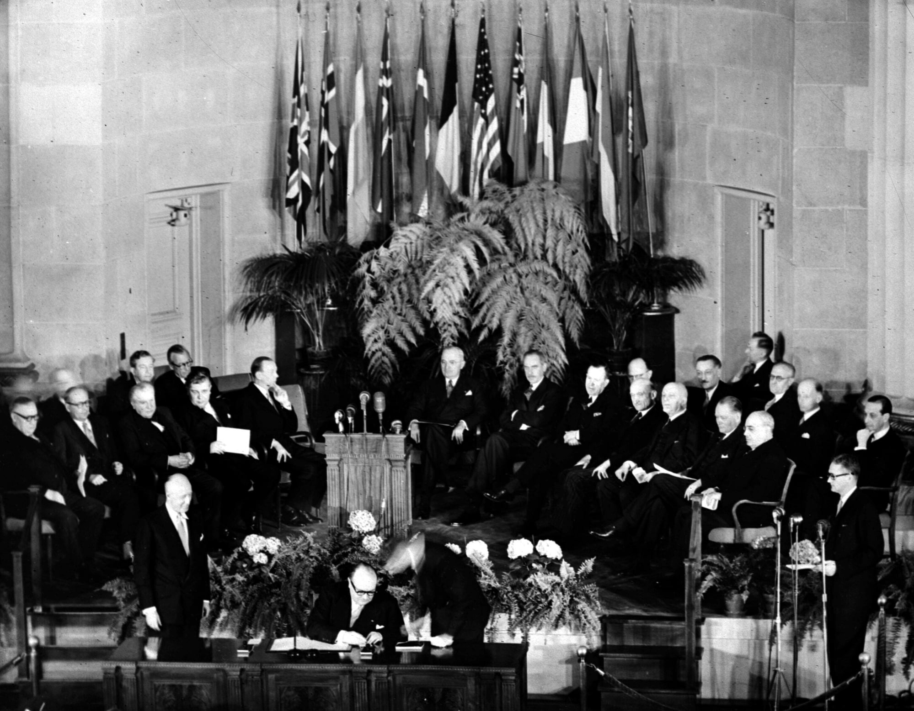
Signing of the North Atlantic Treaty, Washington, D.C., April 4, 1949. Wikimedia Commons.
Military alliances hardened the Cold War. NATO joined the United States with Western Europe. The Soviet Union responded with the Warsaw Pact. Each side promised to defend its allies. The world became organized into armed camps, and every crisis carried the fear of a larger war.
Military alliances made the Cold War harder. NATO joined the United States with Western Europe. The Soviet Union created the Warsaw Pact. Each side promised to defend its allies. Every crisis could become a larger war.
Real-world connection: Nuclear weapons and NATO still shape world politics, which means Cold War decisions still affect the present.
Real-world connection: Nuclear weapons and NATO still shape world politics today.
PRIMARY SOURCE
PRIMARY SOURCE MOMENT
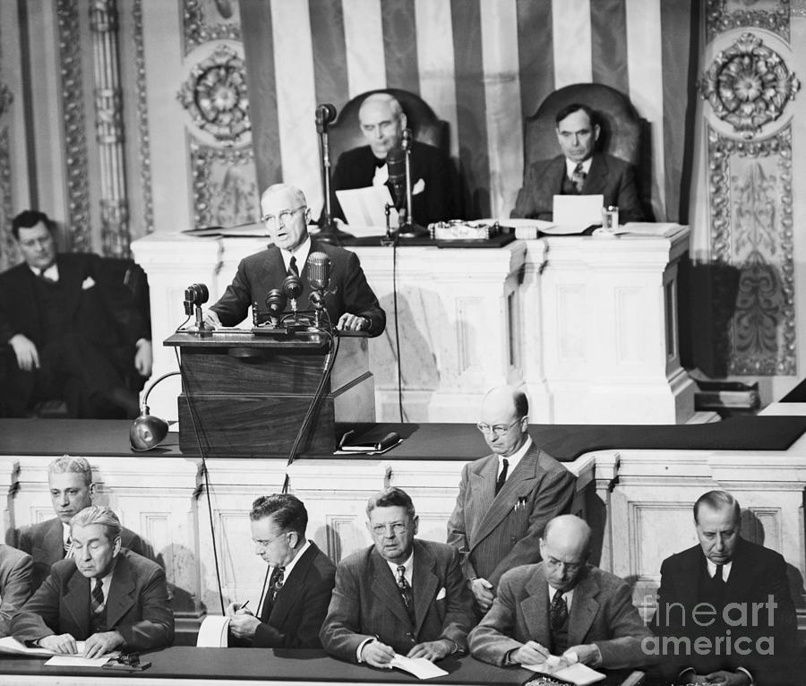
President Truman addresses Congress, March 12, 1947. His speech made containment official U.S. policy. Library of Congress / Wikimedia Commons.
PRIMARY SOURCE
"I believe that it must be the policy of the United States to support free peoples who are resisting attempted subjugation."
President Harry S. Truman, Address to Congress, March 12, 1947
Truman made fear of communist expansion into official U.S. foreign policy. His words helped launch containment: the idea that the United States should help stop communism from spreading. This source connects to the essential question because it shows how Cold War fear pushed American leaders to act far beyond U.S. borders.
THEN AND NOW
THE COLD WAR NEVER FULLY DISAPPEARED: IT LEFT BEHIND ALLIANCES, WEAPONS, AND OLD FEARS WITH NEW NAMES.
THEN
Cold War Americans passed fallout shelter signs in schools, offices, and public buildings.
NOW
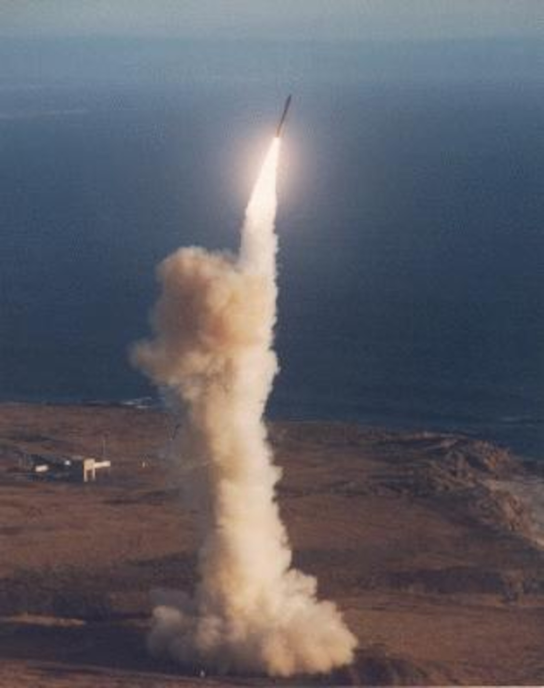
Modern nuclear missiles are part of the same arms race legacy that grew during the Cold War.
THEN
During the Cold War, ordinary Americans lived with signs, sirens, drills, and public warnings about nuclear attack. The fallout shelter sign shows how global conflict entered daily life. Fear was not only in government meetings; it was also in schools, hallways, and city buildings.
NOW
Today, the United States and Russia still hold large nuclear arsenals. The Cold War ended in 1991, but the weapons, alliances, and mistrust did not simply disappear. Modern nuclear systems remind us that old conflicts can leave behind dangerous tools.
CONNECTION
The Cold War changed both foreign policy and daily life because fear became a way of making decisions. Leaders built alliances and weapons abroad while families practiced survival routines at home. What Cold War fear still shapes the world you live in today?